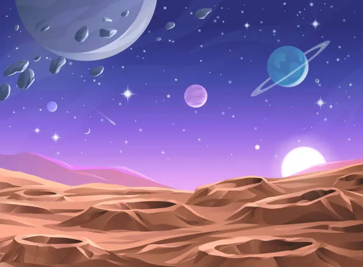

Unlock The Cosmos
A comprehensive collection of guides, tools, and research materials to elevate your journey through the stars.
Beginner Guides
Essential starting points for every aspiring astronomer.
Stargazing 101: Your First Night
Everything you need to know about finding your way around the night sky without expensive gear.
Moon Phases & Observation
A guide to identifying major lunar craters and understanding the best times for lunar photography.
Understanding Celestial Coordinates
RA, Dec, Alt-Az? We break down the grid systems used to map and navigate the universe.
Equipment & Gear
Master your tools and optimize your observation rig.
Telescope collimation 2026
The ultimate technical guide to perfecting your mirror alignment for razor-sharp views.
Read Technical Guide
Camera Sensor Cooling Tips
Reduce noise in your astrophotography by controlling sensor heat during long exposures.
Watch SessionSky Maps & Star Charts
Navigational charts for every hemisphere and season.

Feb 2026 Night Map

Feb 2026 Night Map

Messier Catalog Map
Lunar Topography Chart
Software & Mobile Apps
Digital tools to enhance your stargazing experience.

Tutorials & Video Library
Visual guides to help you master complex astronomy concepts.
Polar Alignment Explained
A step-by-step guide for wedge-mounted scopes.
Stacking Your First Galactic Image
Using DeepSkyStacker with DSLRs.
 15:30
15:30
Observing Distant Galaxies
Visual vs Photographic techniques.
Advanced & Research
Scientific databases and professional-grade research tools.
Simbad Astronomical Database
Access the world's most comprehensive catalog of astronomical objects outside the solar system. Includes cross-identifications, bibliography, and measurements.
-
Gaia Data Release 3
Over 1.8 billion stars with parallax and motion data.
-
AAVSO Light Curve Generator
Professional tools for variable star observation.
Download Center
Ready-to-use templates and logs for your field operations.
Night Logbook Template
Professional sheet for recording object sky conditions and gear.
Download SheetEquipment Inventory Tracker
Organize your eyepieces, filters, and OTA specifications.
Download TrackerField Sketching Pad
High-contrast templates for hand-sketching deep sky objects.
Download TemplateCommunity Recommendations
Top-rated books and forums recommended by our members.
Recommended Books
- Turn Left at Orion - Consolmagno
- NightWatch - Terence Dickinson
- The Backyard Astronomer's Guide
Favorite Forums
- Cloudy Nights - Largest Astro Community
- Astrobiscuit - Gear & Humor
- Stargazers Lounge - Enthusiast Hub
Expert Channels
- Cuiv the Lazy Geek - Astrophotography
- Deep Sky Videos - Science Context
- Dylan O'Donnell - Star Stuff
Missing a Resource?
Contribute your own guides, tips, or field logs to help our community grow. We're always looking for cosmic wisdom.